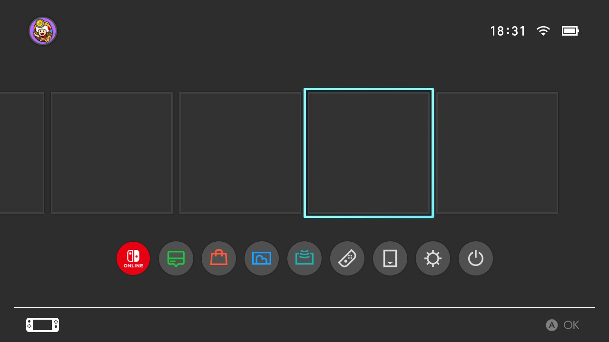
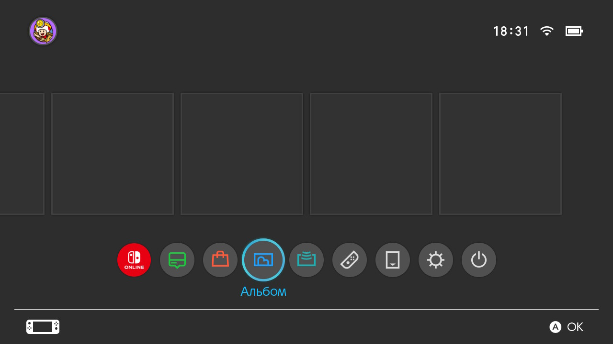
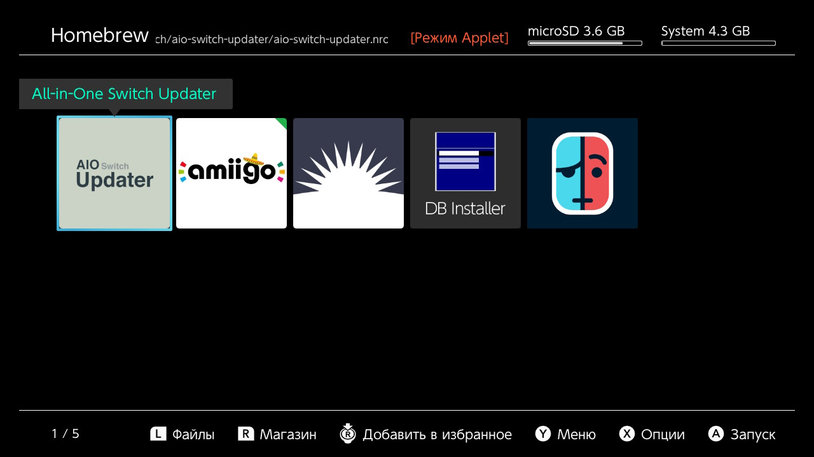
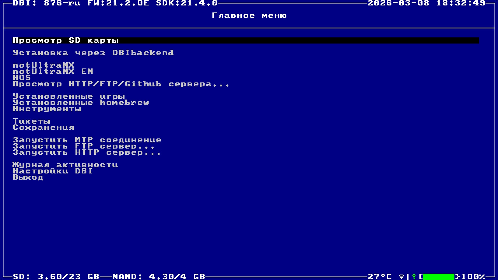
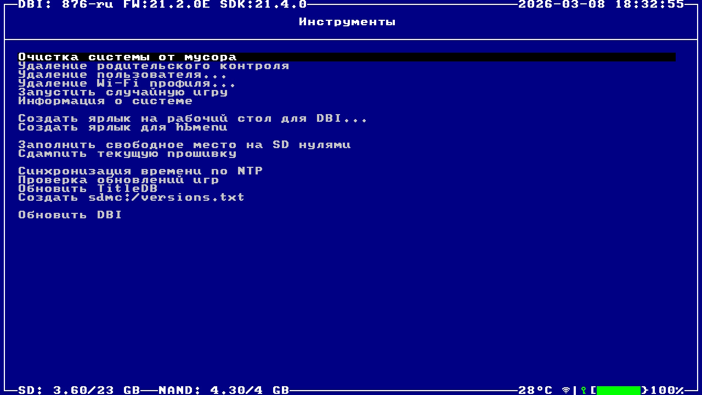
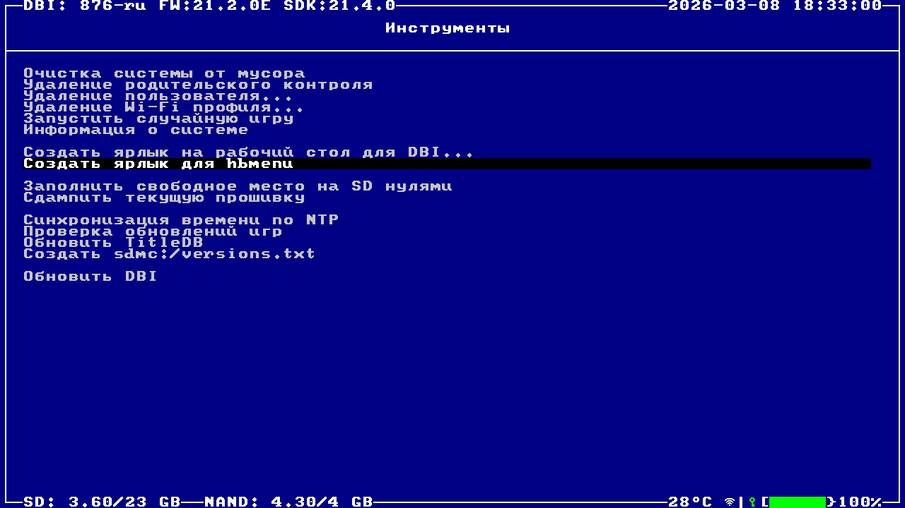

Ярлык Homebrew на главном экране
Удобный способ запускать Homebrew Menu и DBI без необходимости каждый раз зажимать кнопки и заходить через Альбом (Applet Mode).
Инструкция по созданию ярлыка
-
Главный экран. Включите консоль и перейдите на главный экран Nintendo Switch.

-
Вход в Applet Mode. Зажмите и удерживайте кнопки L и R на ваших джойконах. Не отпуская их, выберите иконку стандартного приложения Альбом и нажмите A для запуска.

-
Homebrew Menu. Вместо альбома с фотографиями у вас откроется меню Homebrew в режиме "Applet Mode" (в правом верхнем углу будет красная надпись).

-
Запуск DBI. В списке программ найдите и запустите приложение DB Installer (DBI).

-
Инструменты (Tools). В главном меню программы DBI спуститесь вниз и выберите пункт Tools.

-
Создание ярлыков. В появившемся меню найдите и выберите Create shortcut for Homebrew Menu.
Подсказка: В этом же меню вы можете выбрать пункт Create shortcut for DBI, чтобы создать отдельный ярлык и для самой программы DBI!